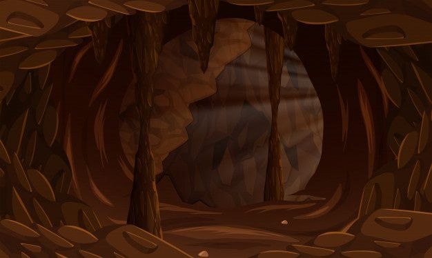

Um herói derrotado a muito tempo atrás acordou em uma caverna escondia numa densa floresta.
Então o heroi toma sua decisão e mesmo que tente explorar a caverna ele ve que a caverna esta bloqueada por diversas rochas extremamente pesadas,ele então decide por explorar a caverna afim de encontrar a saída
ele sai da caverna
ele encontra a saída